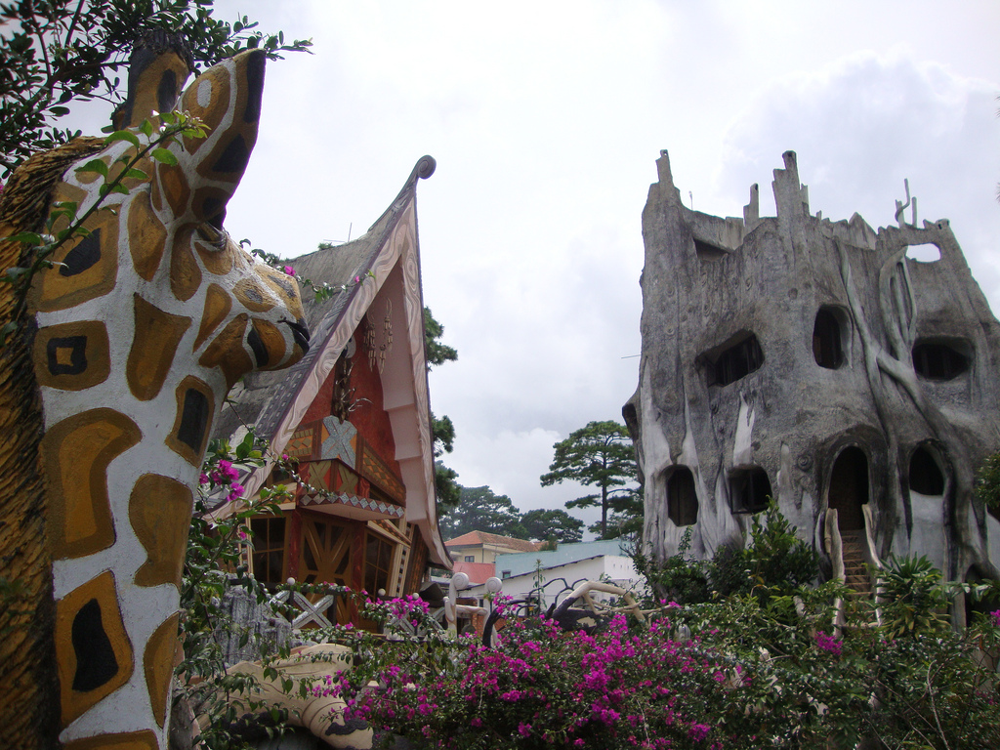

Ở Việt Nam, Đà Lạt từ lâu đã là một thành phố du lịch nổi tiếng.
Khí hậu mát mẻ, tài nguyên thiên nhiên và nhân văn phong phú giúp thành phố mỗi năm thu hút hàng triệu du khách tới thăm viếng và nghỉ dưỡng.
Sau một thời gian trầm lắng của thập niên 1980, du lịch Đà Lạt thay đổi mạnh mẽ trong những năm gần đây.
Vào thời điểm năm 2001, thành phố có 369 khách sạn gồm 4.334 phòng với sức chứa 15.821 khách, đến năm 2009 số cơ sở lưu trú tại Đà Lạt đã lên đến 673 cơ sở với hơn 11 ngàn phòng và sức chứa trên 38 ngàn khách.
Tuy vậy, phần lớn các cơ sở lưu trú của thành phố có quy mô trung bình hoặc nhỏ, mang tính cá nhân, gia đình và thiếu chuyên nghiệp.
Trong 673 cơ sở, chỉ 85 khách sạn đạt tiêu chuẩn 1 đến 5 sao và 11 khách sạn từ 3 đến 5 sao. Các khách sạn lớn tập trung chủ yếu ở khu vực Phường 1 và Phường 2, một số ít nằm rải rác ở các phường lân cận.
Hiệu suất thuê phòng của các khách sạn tại Đà Lạt khoảng 30 đến 35% và phân bố không đều trong năm, tập trung vào các ngày lễ và kỳ nghỉ hè.
So với các đô thị khác của Việt Nam, Đà Lạt là thành phố được thiên nhiên dành cho nhiều ưu ái.
Những thắng cảnh của thành phố, nằm rải rác ở cả khu vực trung tâm lẫn vùng ngoại ô, như hồ Xuân Hương, đồi Cù,
thung lũng Tình Yêu, hồ Than Thở, thác Prenn... từ lâu đã trở nên nổi tiếng. Các địa điểm như thung lũng Tình Yêu,
hồ Than Thở hay thác Prenn đã mất đi nét hoang sơ bởi sự xuất hiện của quá nhiều hàng quán, khu trò chơi và cây cảnh.
Thác Voi, một thắng cảnh khác không xa Đà Lạt, cũng bị ô nhiễm nặng do những người dân sinh sống ở vùng thượng nguồn
thường xả rác và chất bẩn xuống dòng suối. Vào năm 2008, Sở Văn hóa Thông tin tỉnh Lâm Đồng đã có văn bản đề nghị Bộ Văn hóa,
Thể thao và Du lịch rút tên hai thác Liên Khương và Gougah khỏi danh sách di tích quốc gia bởi cảnh quan hai danh thắng này
đã bị thay đổi.

Từ năm 2005, thành phố bắt đầu tổ chức Festival Hoa Đà Lạt, một lễ hội với nhiều sự kiện cùng các hoạt động nghệ thuật nhằm giới
thiệu các loài hoa địa phương cũng như từ những vùng miền khác. Năm 2007, dù chưa thực sự được tổ chức tốt, Festival Hoa Đà Lạt
lần thứ hai đã thu hút khoảng 120 ngàn du khách tới thăm. Festival Hoa Đà Lạt 2010 là sự kiện đầu tiên trong chuỗi bảy sự kiện
quốc gia mừng đại lễ 1000 năm Thăng Long – Hà Nội. Trong dịp này, đã có gần 300 ngàn du khách đến với Đà Lạt trong suốt 4 ngày
của lễ hội. Năm 2012, Festival Hoa được tổ chức vào dịp nghỉ lễ Tết Dương lịch và đã thu hút hơn 300 ngàn du khách tới tham dự.
Trong những năm gần đây, số lượng khách du lịch tới Đà Lạt vẫn tiếp tục tăng. Vào năm 2000, thành phố đón 710 ngàn lượt khách
tới thăm, đến năm 2009, con số đã tăng gấp ba với trên 2,1 triệu lượt khách, trong đó khoảng 10% là du khách quốc tế. Mặc dù
vậy, thời gian trung bình khách lưu lại Đà Lạt chỉ 2 ngày, trong khi tỷ lệ của Bình Thuận là 3,8 đến 4 ngày. Du lịch Đà Lạt
phải đối mặt với sự cạnh tranh mạnh mẽ của Nha Trang và Phan Thiết, hai thành phố du lịch duyên hải không xa Đà Lạt.
Đà Lạt Tour
Đà Lạt - Thành phố ngàn hoa!
Trải nghiệm - Khám phá - Nâng tầm cuộc sống - Thoải mái với đam mê của bạn